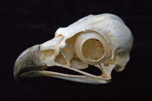
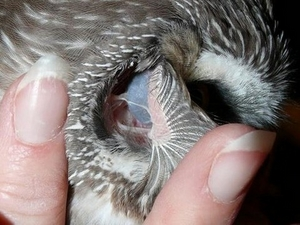

Птицы — это теплокровные животные. Их характерные признаки — тело, покрытое перьями, и передние конечности, превращенные в крылья, которые в большинстве случаев служат для полета. Кроме того, у них нет зубов, а вместо них имеется клюв с ороговевшим покровом. Птицы появились на Земле примерно 130 миллионов лет назад. В наши дни их можно встретить во всех уголках Земли, от полюсов до пустынь. Заинтересован? Тогда продолжай изучать этот прекрасный вид животных! Продолжение ниже:) |
|
|
Внешний вид |
 Скелет птицы |
|
 Строение внутренних органов |
Питание и образ жизни |